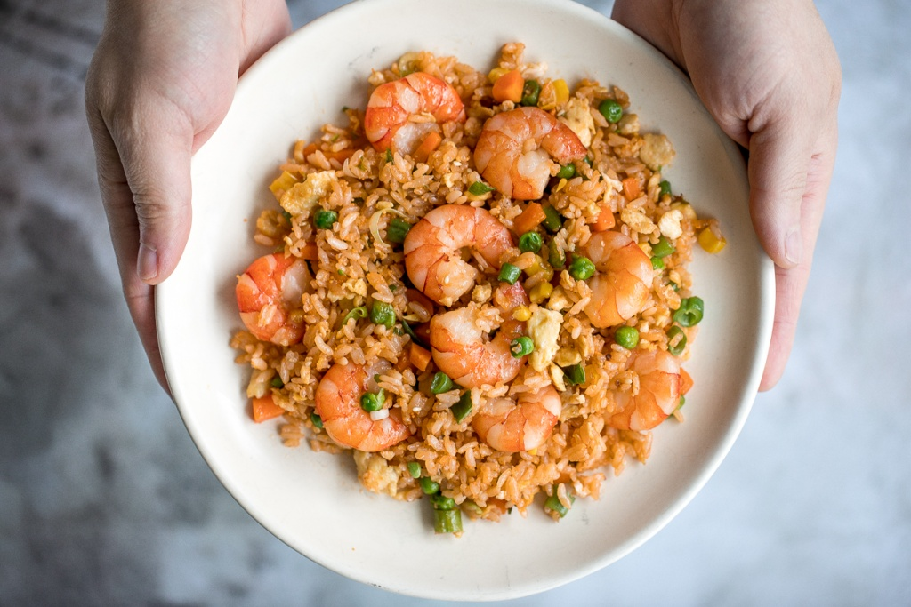

Seafood Fried Rice

Description
A few weeks ago, I shared my super simple and delivious Chinese-style 10 minute vegetarian fried rice. Now, it's time to switch up the flavours and add in someone
protein. 10-minute seafood fried rice is on the menu tonight. It's a one-pan, quick and easy, better than takeout meal that can be made at home tastier and with
healthier ingredients. It's the easiest weeknight meal.
Ingredients
- vegetable oil
- tiger prawns
- eggs
- white rice
- vegetables
- seasonings
- satay sauce
- green onions
- roasted white sesame seeds (optional)
- masago caviar (optional)
Steps
- ook the prawns over medium-high heat with ginger
- Make some space and add in the eggs with a pinch of green onions, and scramble
- Stir in carrots, sweet corn and peas (and any other vegetables if using)
- Stir in rice
- Continuously stir to cook evenly and distribute
- Add in seasoning (satay sauce, sesame oil and salt) and continously stir
- Add maggi sauce and green onions and stir to combine
- Top with a sprinkle of sesame seeds and masago caviar (roe) on top, and serve
home page